library(tsibble)
library(forecast)
library(fable)
library(fabletools)
library(fable.prophet)
library(feasts)
library(lubridate)
library(tidyr)
library(dplyr)
library(ggplot2)
library(GGally)
theme_set(theme_bw())Previsão de energia considerando a produção na indústria automotiva
ind_auto <- read.csv("industria_auto.csv", header = T)
ind_auto <- ind_auto |>
mutate(data = yearmonth(parse_date_time(data, orders = "b-y"))) |>
pivot_longer(energia:producao, names_to = "serie", values_to = "valor")
ind_auto <- as_tsibble(ind_auto, index = data, key = serie)name.lab <- c("Emplacamentos", "Energy consumption [GWh]", "Production [units]")
names(name.lab) <- c("emplacamento", "energia", "producao")
ind_auto |>
filter_index("2013-01"~.) |>
filter(serie != "emplacamento") |>
autoplot(valor) +
facet_wrap(nrow=3, ~ serie, scales = "free_y",
labeller = labeller(serie = name.lab)) +
guides(colour = "none") +
ylab("value")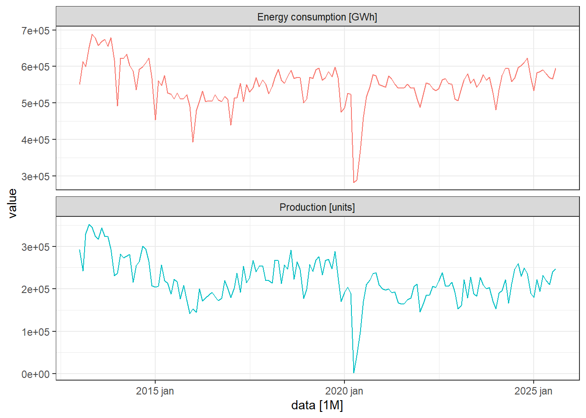
ind_auto |>
filter(serie != "emplacamento") |>
filter_index("2021-01"~.) |>
autoplot(log(valor)) +
facet_wrap(nrow=3, ~ serie, scales = "free_y",
labeller = labeller(serie = name.lab)) +
guides(colour = "none")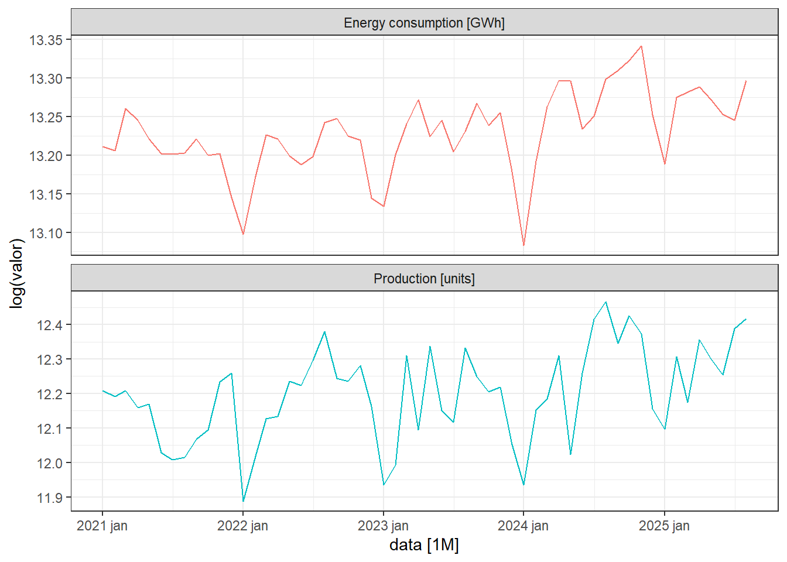
ind_auto |>
filter(serie != "emplacamento") |>
filter_index(~"2019-12") |>
autoplot(log(valor)) +
facet_wrap(nrow=3, ~ serie, scales = "free_y",
labeller = labeller(serie = name.lab)) +
guides(colour = "none")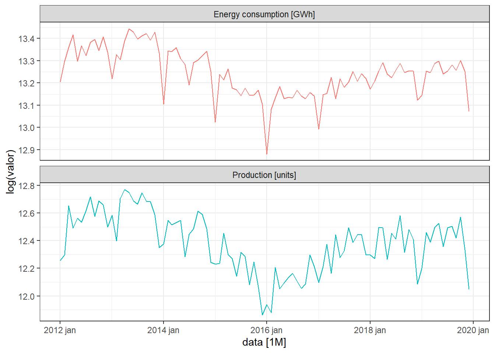
ind_auto |>
filter_index("2013-01"~.) |>
filter(serie != "emplacamento") |>
gg_season(valor, facet_period = NULL) +
facet_wrap(~ serie, scales = "free_y", nrow = 3,
labeller = labeller(serie = name.lab)) +
ylab("value")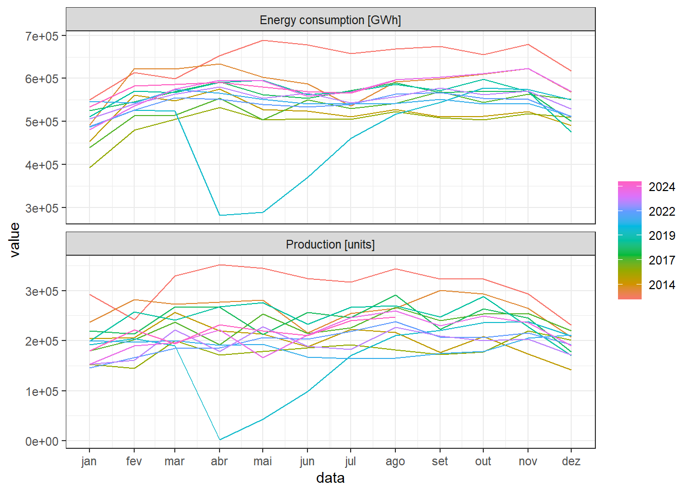
ind_auto |>
features(valor, features = unitroot_kpss) |>
rename(Série = serie,
Estatística = kpss_stat,
pvalor = kpss_pvalue)# A tibble: 3 × 3
Série Estatística pvalor
<chr> <dbl> <dbl>
1 emplacamento 1.34 0.01
2 energia 0.582 0.0243
3 producao 1.14 0.01 ind_auto |>
filter_index("2013-01"~.) |>
filter(serie != "emplacamento") |>
ACF(valor) |>
autoplot() +
facet_wrap(~ serie, scales = "free_y", nrow = 3,
labeller = labeller(serie = name.lab))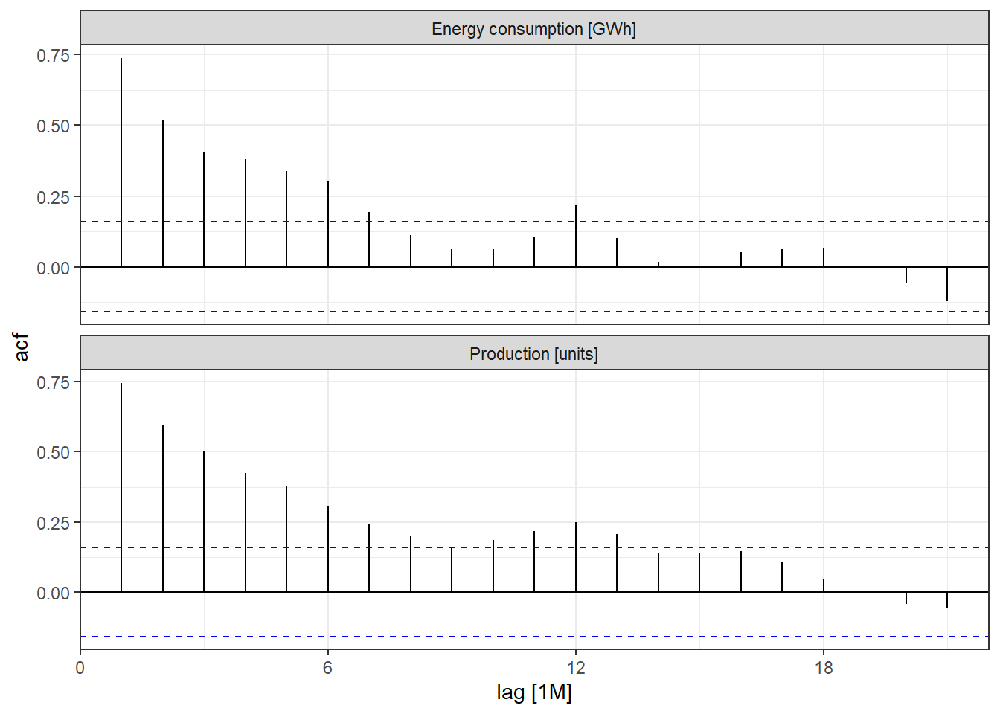
ind_auto |>
filter_index("2013-01"~.) |>
pivot_wider(names_from = "serie", values_from = "valor") |>
mutate(energia = energia |> difference() |> difference(lag=12),
producao = producao |> difference() |> difference(lag=12)) |>
CCF(energia, producao) |>
autoplot()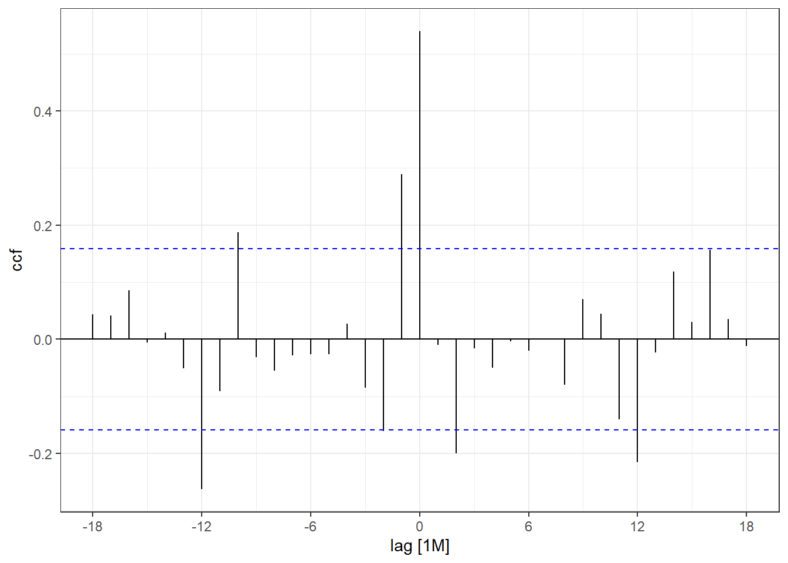
ind_auto <- ind_auto |>
mutate(parada_covid = if_else(data >= yearmonth("2020-04") &
data <= yearmonth("2020-06"),
1, 0))
ind_auto <- ind_auto |> filter_index("2013-01"~.)RFO
all_dates <- sort(unique(ind_auto$data))
N <- length(all_dates)path <- "Resultados"
if(!dir.exists(path)) dir.create(path)arquivo_csv <- file.path(path, "metricas_rfo.csv")
if (file.exists(arquivo_csv)) file.remove(arquivo_csv)[1] TRUEw <- 13 # windows size of rolling forecasting origin
# for (h in 1:6) { ### ATENTION: In the paper we did h=1:6 ###
for (h in 1) {
message("=== Horizonte h = ", h, " ===")
for (i in (N-w-h+1):(N - h)) {
cut_date <- all_dates[i]
message("i = ", i, " | cut_date = ", cut_date)
train_set <- ind_auto |>
pivot_wider(names_from = "serie", values_from = "valor") |>
filter(data <= cut_date)
test_dates <- all_dates[(i+1):(i+h)]
test_set <- ind_auto |>
pivot_wider(names_from = "serie", values_from = "valor") |>
filter(data %in% test_dates)
temp <- bind_rows(train_set, test_set) |>
mutate(
log_energia = log(energia),
log_producao = log(producao),
lag1_log_producao = lag(log_producao),
lag2_log_producao = lag(log_producao,2)
)
train_set2 <- temp |>
filter(data <= cut_date) |> drop_na()
test_set2 <- temp |>
filter(data %in% test_dates)
fit_auto <- train_set2 |>
mutate(log_energia = c(rep(NA, 2), log_energia[3:length(log_energia)])) |>
drop_na() |>
model(sarimax012 = ARIMA(log_energia ~ log_producao + lag1_log_producao + lag2_log_producao),
sarimax01c = ARIMA(log_energia ~ log_producao + lag1_log_producao + parada_covid),
sarimax01 = ARIMA(log_energia ~ log_producao + lag1_log_producao),
sarimax0c = ARIMA(log_energia ~ log_producao + parada_covid),
sarimax0 = ARIMA(log_energia ~ log_producao),
sarimac = ARIMA(log_energia ~ parada_covid),
sarima = ARIMA(log_energia), #,
prophetx012 = prophet(log_energia ~ log_producao + lag1_log_producao +lag2_log_producao),
prophetx01c = prophet(log_energia ~ log_producao + lag1_log_producao + parada_covid),
prophetx01 = prophet(log_energia ~ log_producao + lag1_log_producao),
prophetx0c = prophet(log_energia ~ log_producao + parada_covid),
prophetx0 = prophet(log_energia ~ log_producao),
prophetc = prophet(log_energia ~ parada_covid),
prophet = prophet(log_energia),
nnetarx012 = NNETAR(log_energia ~ log_producao + lag1_log_producao + lag2_log_producao),
nnetarx01c = NNETAR(log_energia ~ log_producao + lag1_log_producao + parada_covid),
nnetarx01 = NNETAR(log_energia ~ log_producao + lag1_log_producao),
nnetarx0c = NNETAR(log_energia ~ log_producao + parada_covid),
nnetarx0 = NNETAR(log_energia ~ log_producao),
nnetarc = NNETAR(log_energia ~ parada_covid),
nnetar = NNETAR(log_energia),
ets = ETS(log_energia)
)
fc_auto <- forecast(fit_auto, new_data = test_set2)
metrics <- accuracy(fc_auto |>
mutate(log_energia = exp(log_energia)),
test_set2 |> mutate(log_energia = exp(log_energia))) |>
select(.model, RMSE, MAE, MAPE) |>
mutate(h = h, i = i)
write.table(
metrics,
file = arquivo_csv,
append = TRUE,
sep = ",",
row.names = FALSE,
col.names = !file.exists(arquivo_csv)
)
}
}ind_auto_ <- ind_auto |>
pivot_wider(names_from = serie, values_from = valor)
fit_auto_best <- ind_auto_ |>
model(sarimax0 = ARIMA(log(energia) ~ log(producao)),
sarimax0dummy = ARIMA(log(energia) ~ log(producao) + parada_covid))
report(fit_auto_best)# A tibble: 2 × 8
.model sigma2 log_lik AIC AICc BIC ar_roots ma_roots
<chr> <dbl> <dbl> <dbl> <dbl> <dbl> <list> <list>
1 sarimax0 0.00305 224. -434. -433. -413. <cpl [25]> <cpl [12]>
2 sarimax0dummy 0.00216 250. -483. -482. -459. <cpl [26]> <cpl [0]> report(fit_auto_best |> select(sarimax0))Series: energia
Model: LM w/ ARIMA(1,0,0)(2,0,1)[12] errors
Transformation: log(energia)
Coefficients:
ar1 sar1 sar2 sma1 log(producao) intercept
0.7459 0.7719 0.0563 -0.3967 0.1121 11.8681
s.e. 0.0575 0.2629 0.1745 0.2606 0.0101 0.1330
sigma^2 estimated as 0.00305: log likelihood=224.04
AIC=-434.09 AICc=-433.31 BIC=-412.92augment(fit_auto_best |> select(sarimax0)) |>
features(.innov, ljung_box, dof = 5, lag = 24) |>
rename(Modelo = .model,
Estatística = lb_stat,
pvalor = lb_pvalue) |>
mutate(across(Estatística:pvalor, ~ round(.x,2)))# A tibble: 1 × 3
Modelo Estatística pvalor
<chr> <dbl> <dbl>
1 sarimax0 13.4 0.82report(fit_auto_best |>
select(sarimax0dummy))Series: energia
Model: LM w/ ARIMA(2,0,0)(2,0,0)[12] errors
Transformation: log(energia)
Coefficients:
ar1 ar2 sar1 sar2 log(producao) parada_covid intercept
0.3979 0.4007 0.5391 0.2040 0.0795 -0.3224 12.2813
s.e. 0.0826 0.0800 0.0819 0.0914 0.0098 0.0347 0.1337
sigma^2 estimated as 0.002159: log likelihood=249.63
AIC=-483.26 AICc=-482.26 BIC=-459.07augment(fit_auto_best |> select(sarimax0dummy)) |>
features(.innov, ljung_box, dof = 4, lag = 24) |>
rename(Modelo = .model, Estatística = lb_stat, pvalor = lb_pvalue) |>
mutate(across(Estatística:pvalor, ~ round(.x,2)))# A tibble: 1 × 3
Modelo Estatística pvalor
<chr> <dbl> <dbl>
1 sarimax0dummy 21.4 0.37fit_auto_best |>
select(sarimax0) |>
gg_tsresiduals()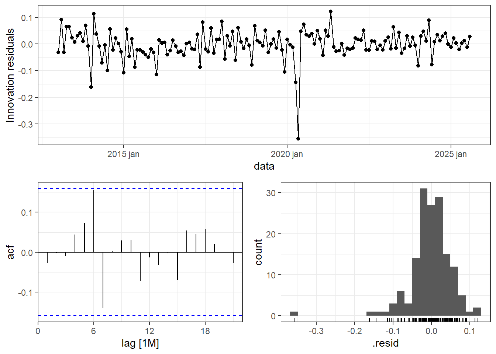
fit_auto_best |>
select(sarimax0dummy) |>
gg_tsresiduals()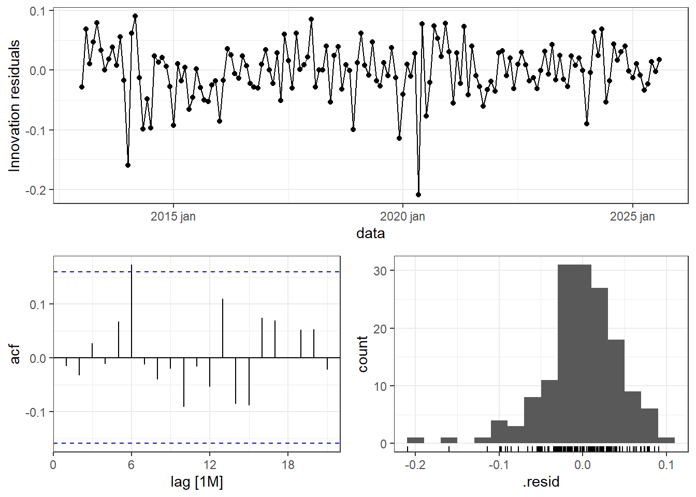
fit_prod <- ind_auto_ |>
model(ARIMA(producao ~ parada_covid))
report(fit_prod)Series: producao
Model: LM w/ ARIMA(0,1,1)(2,0,0)[12] errors
Coefficients:
ma1 sar1 sar2 parada_covid
-0.5658 0.2741 0.1444 -151271.92
s.e. 0.0782 0.0836 0.0895 17626.44
sigma^2 estimated as 793232212: log likelihood=-1760.45
AIC=3530.89 AICc=3531.3 BIC=3545.98augment(fit_prod) |>
features(.innov, ljung_box, dof = 4, lag = 24) |>
rename(Modelo = .model, Estatística = lb_stat, pvalor = lb_pvalue) |>
mutate(across(Estatística:pvalor, ~ round(.x,2)))# A tibble: 1 × 3
Modelo Estatística pvalor
<chr> <dbl> <dbl>
1 ARIMA(producao ~ parada_covid) 21.8 0.35fit_prod |>
gg_tsresiduals()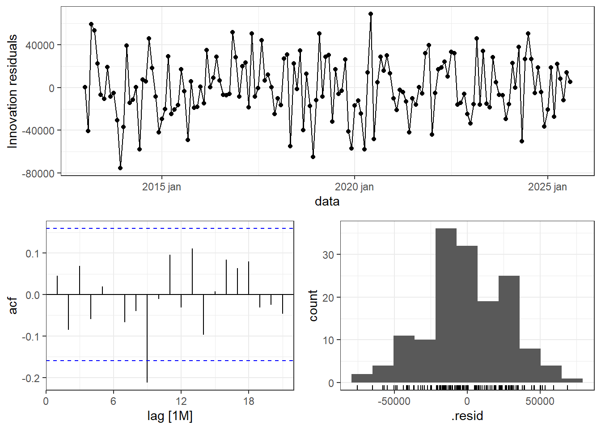
prod_scenarios <- read.csv("fc_filt.csv", header = T)
prod_scen <- (prod_scenarios |>
filter(.model == "wlsv") |>
select(.mean))$.mean
auto_future <- new_data(ind_auto_, 6) |>
mutate(parada_covid = 0,
producao = prod_scen)
fc_energia <- forecast(fit_auto_best,
auto_future)
fc_energia$reconciliation <- "wlsv"fc_energia |>
filter_index("2021-01"~"2025-11") |>
filter(.model == "sarimax0") |>
autoplot(ind_auto_ |>
filter_index("2021-01"~"2025-11")) +
ylab("Energy demand [GWh]")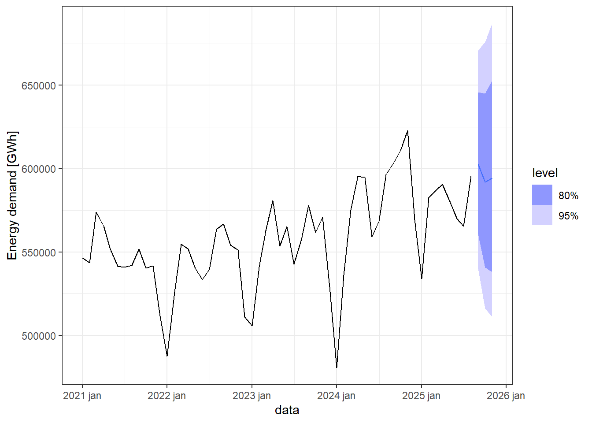
prod_scen_bu <- (prod_scenarios |>
filter(.model == "bu") |>
select(.mean))$.mean
auto_future_bu <- new_data(ind_auto_, 6) |>
mutate(parada_covid = 0,
producao = prod_scen_bu)
fc_energia_bu <- forecast(fit_auto_best,
auto_future_bu)
fc_energia_bu$reconciliation <- "bu"
prod_scen_ols <- (prod_scenarios |>
filter(.model == "ols") |>
select(.mean))$.mean
auto_future_ols <- new_data(ind_auto_, 6) |>
mutate(parada_covid = 0,
producao = prod_scen_ols)
fc_energia_ols <- forecast(fit_auto_best,
auto_future_ols)
fc_energia_ols$reconciliation <- "ols"
prod_scen_mint <- (prod_scenarios |>
filter(.model == "mint") |>
select(.mean))$.mean
auto_future_mint <- new_data(ind_auto_, 6) |>
mutate(parada_covid = 0,
producao = prod_scen_mint)
fc_energia_mint <- forecast(fit_auto_best,
auto_future_mint)
fc_energia_mint$reconciliation <- "mint"
prod_scen_wlss <- (prod_scenarios |>
filter(.model == "wlss") |>
select(.mean))$.mean
auto_future_wlss <- new_data(ind_auto_, 6) |>
mutate(parada_covid = 0,
producao = prod_scen_wlss)
fc_energia_wlss <- forecast(fit_auto_best,
auto_future_wlss)
fc_energia_wlss$reconciliation <- "wlss"fc_energy_all_recon <- bind_rows(
as_tibble(fc_energia),
as_tibble(fc_energia_bu),
as_tibble(fc_energia_mint),
as_tibble(fc_energia_ols),
as_tibble(fc_energia_wlss)
)
fc_energy_all_recon <- fc_energy_all_recon |>
as_tsibble(
index = index(fc_energia),
key = c(key_vars(fc_energia), "reconciliation")
)
autoplot(
ind_auto_ |> filter_index("2021-01" ~ "2025-11"),
energia
) +
geom_line(
data = fc_energy_all_recon |> filter_index("2021-01"~"2025-11") |>
filter(.model == "sarimax0"),
aes(x = data, y = .mean, colour = reconciliation)
) +
ylab("Energy demand [GWh]") +
labs(color ="")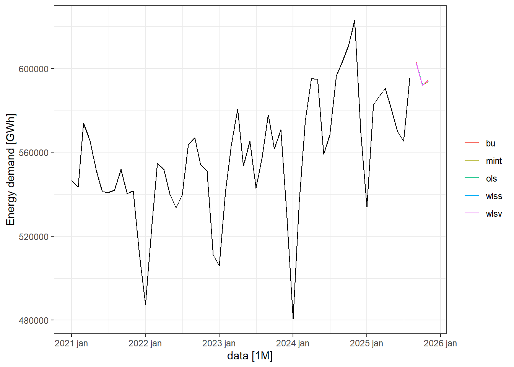
autoplot(
ind_auto_ |> filter_index("2021-01" ~ .),
energia
) +
autolayer(
fc_energy_all_recon |> filter_index("2021-01"~"2025-11") |>
filter(.model == "sarimax0"),
.mean
) +
facet_wrap(~ reconciliation) +
ylab("Energy demand [GWh]") +
theme(legend.position = "")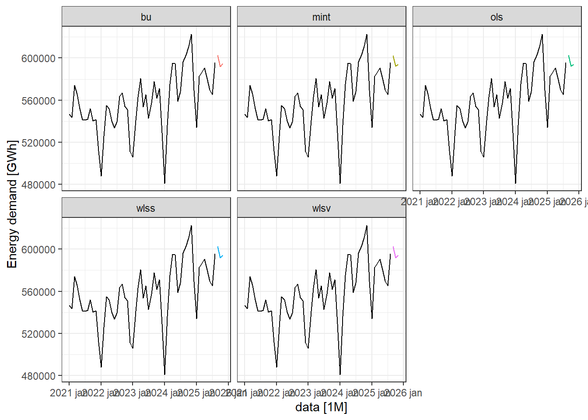
ind_auto_m <- ind_auto_ |>
mutate(
log_energia = log(energia),
log_producao = log(producao),
lag1_log_producao = lag(log_producao),
lag2_log_producao = lag(log_producao,2)
)
fit_auto_best_m <- ind_auto_m |>
mutate(log_energia = c(rep(NA, 2), log_energia[3:length(log_energia)])) |>
drop_na() |>
model(prophetx012 = prophet(log_energia ~ log_producao + lag1_log_producao +lag2_log_producao))
report(fit_auto_best_m)Series: log_energia
Model: prophet
A model specific report is not available for this model class.augment(fit_auto_best_m) |>
features(.innov, ljung_box, dof = 3, lag = 24) |>
rename(Modelo = .model, Estatística = lb_stat, pvalor = lb_pvalue) |>
mutate(across(Estatística:pvalor, ~ round(.x,2)))# A tibble: 1 × 3
Modelo Estatística pvalor
<chr> <dbl> <dbl>
1 prophetx012 166. 0fit_auto_best_m |>
gg_tsresiduals()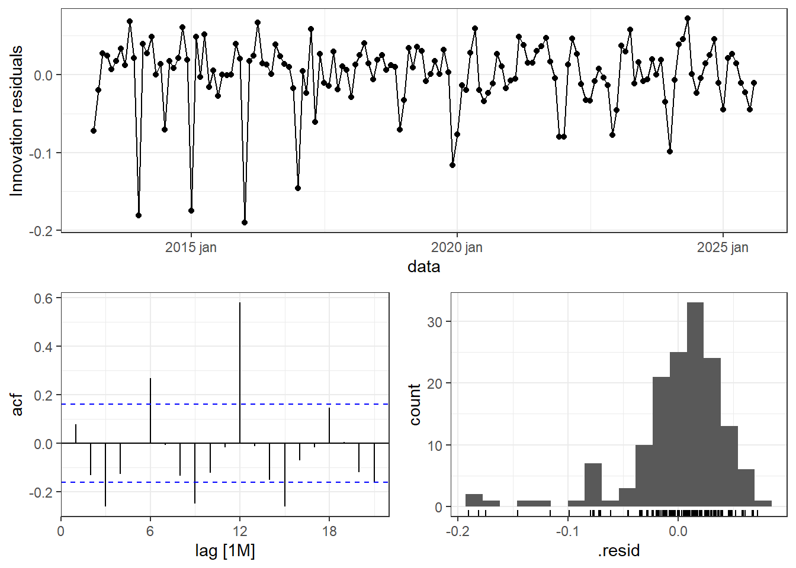
auto_future_m <- auto_future |>
mutate(
# log_energia = log(energia),
log_producao = log(producao),
lag1_log_producao = lag(log_producao),
lag2_log_producao = lag(log_producao,2)
) |>
filter_index("2025-12"~.)
fc_energia_m <- forecast(fit_auto_best_m,
auto_future_m)
fc_energia_m$reconciliation <- "wlsv"fc_energia_m |>
filter_index("2021-01"~.) |>
autoplot(ind_auto_m |>
filter_index("2021-01"~.)) +
ylab("Energy demand [GWh]")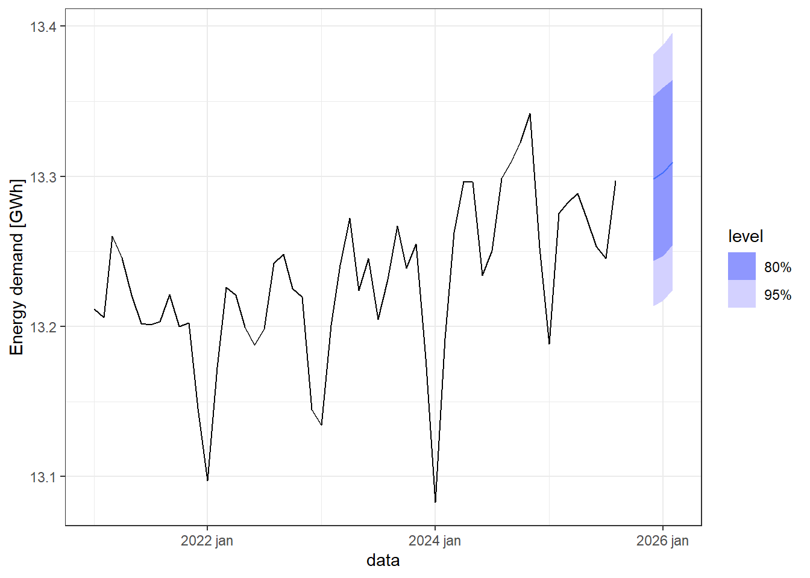